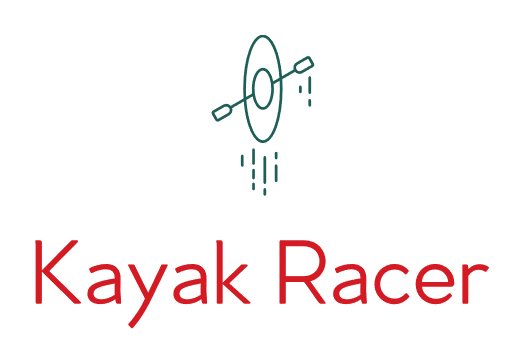

<!--
  Generated template for the SelectPage page.

  See http://ionicframework.com/docs/components/#navigation for more info on
  Ionic pages and navigation.
-->
<ion-header>
    <button (click)="goToHistory()" float-right="" style="  font-family: 'ZCOOL QingKe HuangYou', cursive;">Histoire</button>


</ion-header>


<ion-content padding>
    <link rel="stylesheet" href="https://stackpath.bootstrapcdn.com/bootstrap/4.1.3/css/bootstrap.min.css">

    <div class="container" style="position: absolute; /* postulat de départ */
  top: 50%; left: 50%; /* à 50%/50% du parent référent */
  transform: translate(-50%, -50%); /* décalage de 50% de sa propre taille */">
        <div class="row" style="text-align: center;">
            <div class="col">
                
            </div>
        </div>
        <div class="row">
            <div class="col text-center">
                <button style="height: 100%; width: 50%;   font-family: 'ZCOOL QingKe HuangYou', cursive;"
                        (click)="goToTeam1()" [disabled]="!isenabled">Equipe {{teamOne}}
                </button>
            </div>
            <div class="col text-center">
                <button style="height: 100%; width: 50%;   font-family: 'ZCOOL QingKe HuangYou', cursive;"
                        (click)="goToTeam2()" [disabled]="!isenabled">Equipe {{teamTwo}}
                </button>
            </div>
        </div>
        <br>
        <div *ngIf="!isenabled">
            <marquee behavior="scroll" direction="right"
                     style="background:#353535; font-size: 35px; color: #FF7F50;   font-family: 'ZCOOL QingKe HuangYou', cursive;">
                La partie est en cours
            </marquee>
        </div>
    </div>
</ion-content>
